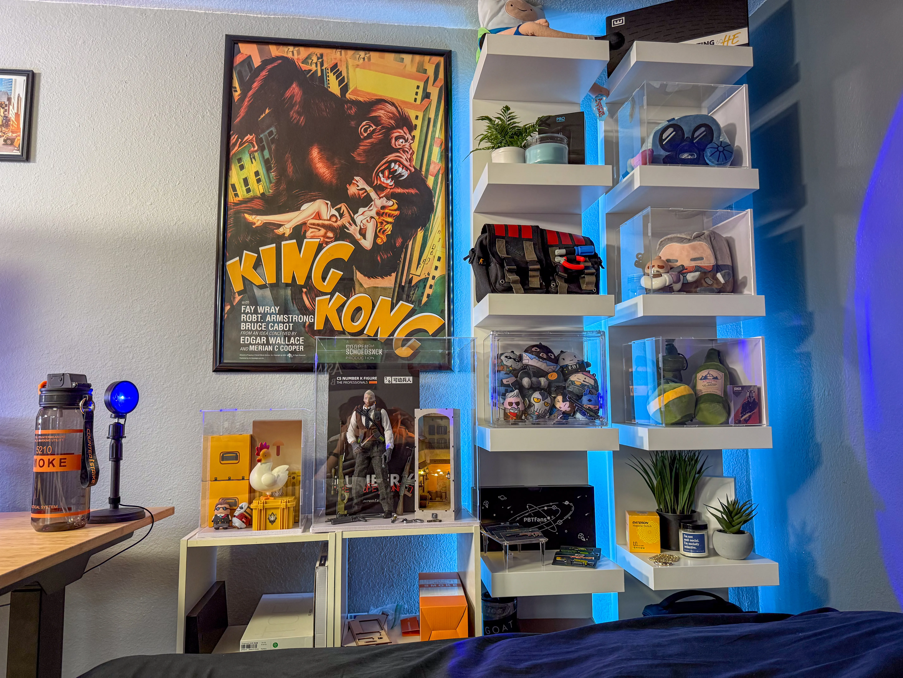
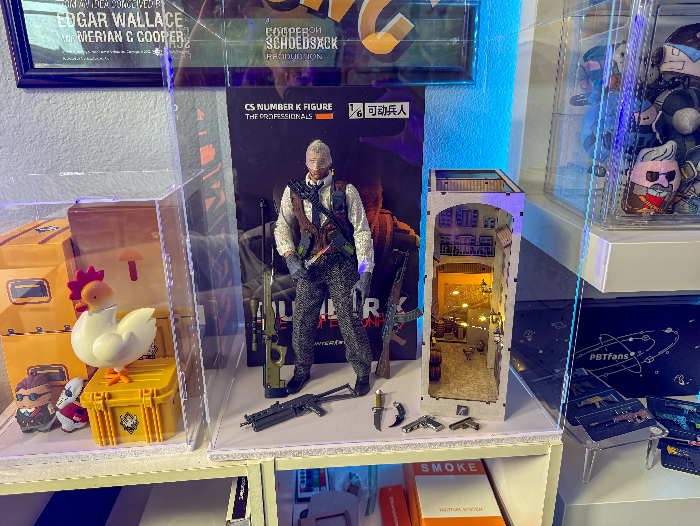
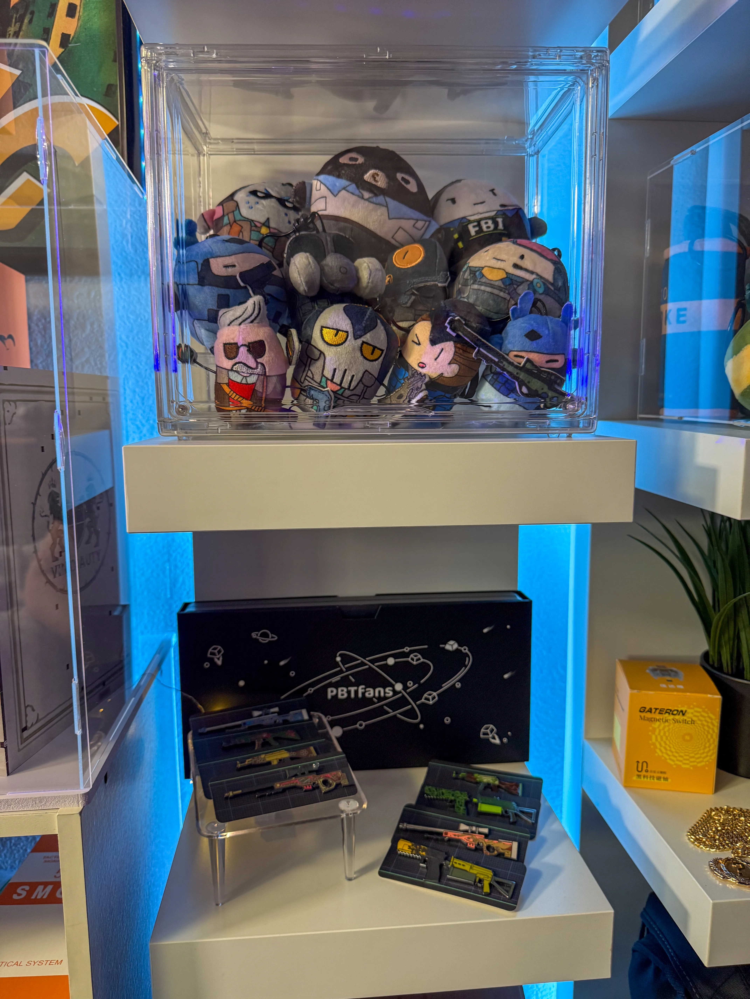
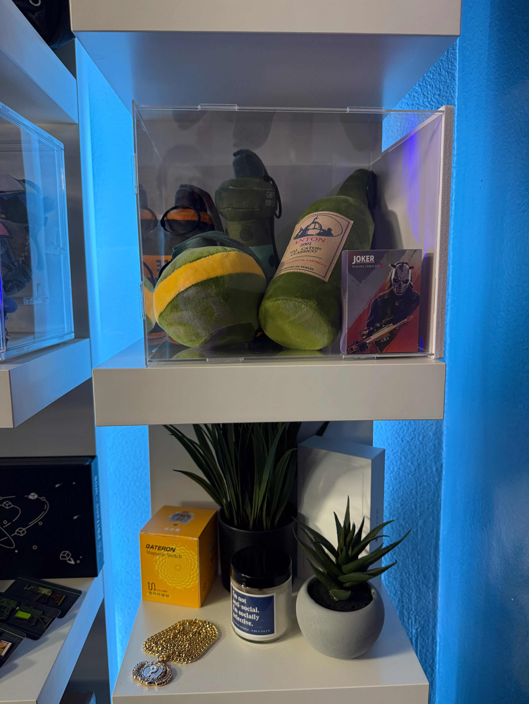
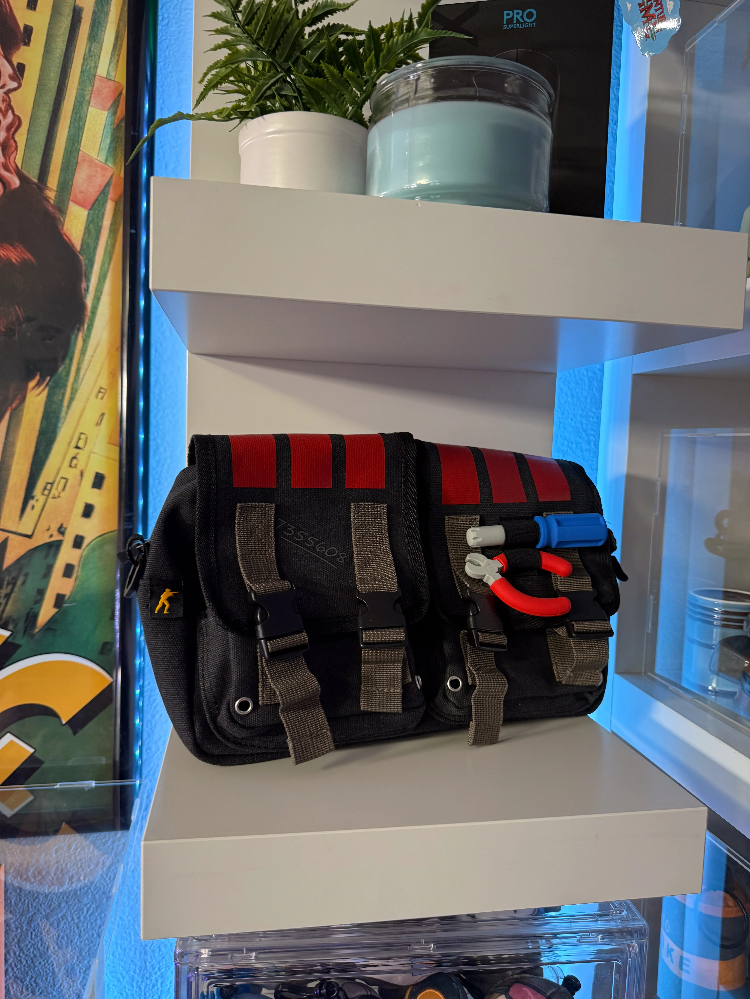
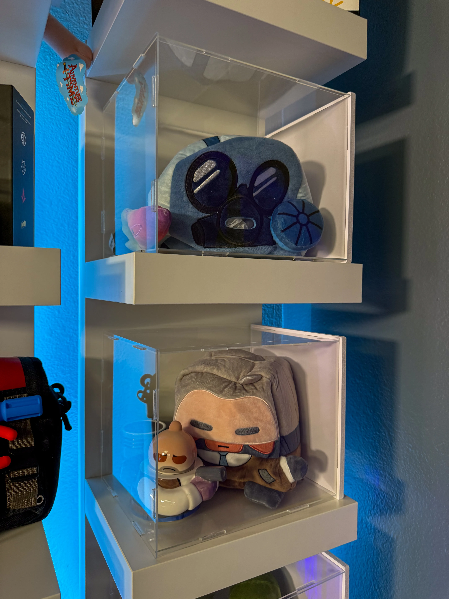

I have a pretty extensive collection of the PGL Perfect World Counter-Strike 2 Shanghai Major merch. I don't have everything but I'm pretty content with everything that I have. Below is a detailed breakdown of each displayed item.

On the left is the CS:GO Chicken Vinyl Base Box along with the box, boxes for the shanghai weapon skin pins, and mini figs from the shanghai major.
In the Right acrylic case is the CS Agent Number K 1/6th figurine with all accessories on display and the Inferno Banana Bookend.

On the top is a clear acrylic box with shelves and a door front. Inside the case is the plushies and stress balls from the PGL Shanghai Major merch drop.
On the lower shelf is the weapon skin pins from the pgl shanghai major. These pins include:

On the top shelf in this photo, the acrylic case holds a set of grenade plushies from the shanghai major including:
I am missing the decoy grenade as it was unavailable for order. Each of these include a medal pin and have a battery powered speaker that plays the sound of each nade when squeezed.
Also on the top shelf is a set of Joker playing cards.
On the bottom shelf is the gold chain from the shanghai major, a Gateron Magnetic Jade Switch Box, a candle and a fake plant.

On this shelf is a defuse kit bag from the Shanghai major. This bag is a replica of the defuse kits used in game and is one of my favorite items from the perfect world merch. It has both a wire cutter and screwdriver that you can remove and are made from some sort of rubbery plastic. The bag overall feels very high quality, has plenty of pockets, and space in the main pouch for anything I need to carry. I definitely plan on using it for IRL counter-strike events/tournaments.

On the upper shelf is an acrylic case with a CT Tissue box cover and skeleton fade knife plushie
On the bottom shelf is an acrylic box with an Agent K tissue box cover and Agent Number K teapot set.